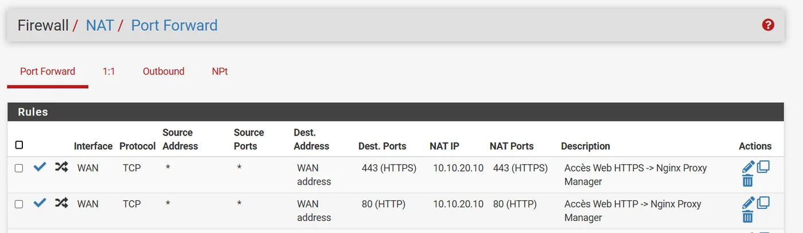
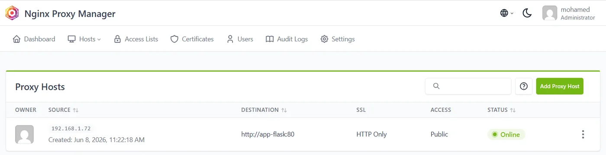

Compétences
Mes environnements techniques
Les outils que j'utilise en formation, en stage et chaque semaine dans mon HomeLab.
Systèmes et virtualisation
- Proxmox VE
- VMware
- Hyper-V
- Windows Server
- Active Directory
- Microsoft 365
- Debian
- Ubuntu
- Kali Linux
Réseaux et sécurité
- Switches
- VLAN
- Routage
- pfSense
- NAT
- DMZ
- Cisco IOS
- Cisco ASA
- GNS3
- Packet Tracer
Conteneurs et services
- Docker
- Docker Swarm
- Nginx Proxy Manager
- Ubuntu Server
- Redis
Supervision et cybersécurité
- Wazuh SIEM
- Zabbix
- Snort
- Nmap
- Wireshark
Développement
- Python · Flask
- HTML / CSS
- JavaScript
- PHP · Laravel
- MySQL
Savoir-être
- Rigueur technique
- Autonomie
- Esprit d'équipe
- Écoute active
- Force de proposition
Projets
HomeLab et réalisations
Les projets que je mène sur mon serveur maison et en formation : l'objectif, les outils et le résultat.
← Tous les projets
Projet HomeLab · juin 2026
Orchestration et sécurisation d'une infrastructure micro-services
Comment héberger une application web comme le ferait une vraie entreprise, avec de la haute disponibilité et une vraie sécurité réseau, depuis un seul mini-PC à la maison ?
- Contexte
- Projet personnel, réalisé seul de A à Z
- Matériel
- 1 mini-PC sous Proxmox VE
- Résultat
- Application en ligne, 3 nœuds « Ready »
Objectifs
OrchestrationRépartir l'application sur plusieurs machines pour qu'elle reste disponible si l'une tombe.
Sécuriser les accèsIsoler la production dans une DMZ et n'ouvrir que le trafic web.
Publication webExposer l'application proprement derrière un reverse proxy.
Montée en compétencesAppliquer concrètement les cours de Master sur une infrastructure réelle.
Architecture
Tout tourne sur un mini-PC virtualisé avec Proxmox VE. Le pare-feu pfSense découpe le réseau en deux zones étanches : le VLAN 10 pour l'administration, et le VLAN 20 (DMZ) qui héberge la production.
Schéma d'architecture complet. Sur téléphone, faites glisser pour explorer.
Mise en œuvre, étape par étape
-
Créer le cluster Docker Swarm
Trois machines virtuelles sous Ubuntu Server. Le node-manager orchestre l'infrastructure, tandis que node-worker-1 et node-worker-2 exécutent l'application en haute disponibilité.
docker node ls : les trois nœuds sont prêts.
-
Filtrer l'entrée avec pfSense
Une règle de redirection de port (NAT) n'autorise que le trafic web légitime (ports 80 et 443) vers le cluster. Les accès d'administration (SSH, port 81) restent bloqués depuis l'extérieur.

Règles NAT : seuls 80 et 443 sont redirigés vers 10.10.20.10.
-
Publier l'application via un reverse proxy
Nginx Proxy Manager intercepte les requêtes externes et s'appuie sur le DNS interne de Docker pour distribuer dynamiquement le trafic vers le service app-flask.

Proxy host vers app-flask, statut « Online ».
-
Valider en conditions réelles
L'application Flask répond et communique via un réseau virtuel isolé (private-net) avec une base Redis, qui incrémente le compteur de visites en temps réel.
Bilan
Compétences mises en pratique
- Administration Linux (Ubuntu)
- Sécurité réseau
- pfSense
- DMZ et VLAN
- NAT
- Docker Swarm
- Reverse proxy
Ce que j'en retiens
« La théorie du cours prend tout son sens quand on doit déboguer soi-même un problème de réseau à 23 h un dimanche. »
Prochaine étape
Ajouter une couche de supervision avec Grafana pour surveiller le cluster en temps réel.
Parcours
Formation et expériences
Des mathématiques à l'infrastructure réseau, en passant par le terrain.
Formation
- 2026 – 2027 · en cours
Master 2 Ingénierie Système, Réseau et Cybersécurité
Institut F2I, Vincennes
En recherche d'entreprise pour poursuivre en alternance.
- 2025 – 2026
Master 1 Ingénierie Système, Réseau et Cybersécurité
Institut F2I, Vincennes
- 2024 – 2025
Bachelor Coordinateur de projet informatique
Keyce Academy, Montpellier
Parcours infrastructure réseau.
- 2021 – 2024
Licence fondamentale Sciences Mathématiques et Informatique
Faculté des Sciences de Tétouan, Maroc
Mention Assez Bien. Diplôme reconnu niveau 6 (attestation ENIC-NARIC).
- 2019 – 2020
Baccalauréat série C, sciences mathématiques
École Muigni Baraka, Moroni (Comores)
Mention Assez Bien.
Expériences
- nov. – déc. 2025
Job étudiant · hôte de caisse et service client
FNAC Rosny 2, Rosny-sous-Bois
Accueil et conseil client, encaissements, ouverture et fermeture de caisse.
- mai – sept. 2025
Stage en administration réseau et support informatique
GRETA-CFA Montpellier Littoral
Séparation des réseaux du GRETA et du lycée sur 2 sites (Montpellier, 5 bâtiments, et Sète) : installation de switches dans chaque bâtiment, création de VLAN par service, support utilisateurs et rapports d'intervention.
- janv. – juin 2024
Projet de fin d'études
Faculté des sciences de Tétouan
Jeu éducatif web pour l'apprentissage des mathématiques, en équipe.
- 2022 – 2024
Volleyball de haut niveau, 1re division
Club CET, Tétouan
Rigueur, discipline et gestion de la pression en compétition officielle.
- été 2021
Employé polyvalent
Restaurant Lagon Bleu, Comores
Accueil, caisse, service et gestion des stocks en forte affluence.